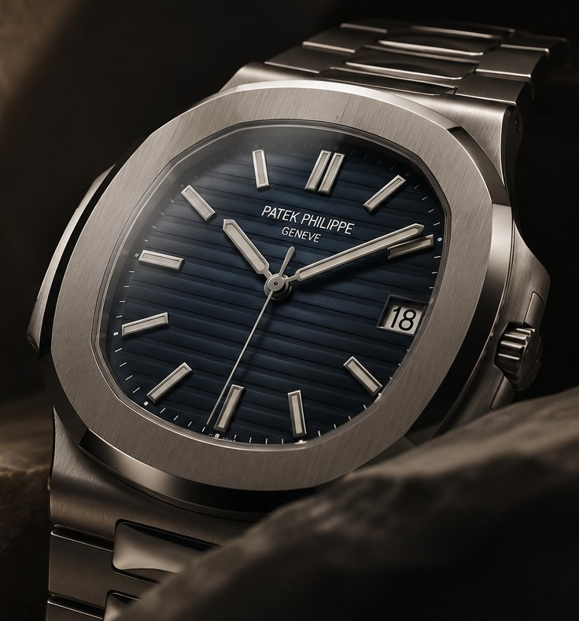

COLLECTIONS TO EXPLORE
CHOOSE A COLLECTION
Not sure which one? You can ask about the watchmaker instead.
Looking for a particular luxury watch? Tell us the maker, model or reference you have in mind. We’ll help with the search.
GET IN TOUCH →AVAILABLE PIECES ↗Some searches begin with a reference number. Others begin with a watch you saw years ago, or an occasion you want to mark.
Tempo Raro offers luxury watch sales and personal watch sourcing. We help you narrow the options and look for the right example through dealer contacts and specialist networks.
HOW SOURCING WORKS →
Looking for a specific model or reference? We can discuss a sourcing request. Here’s how it works.
Share the model or style you like, your budget and when you’re hoping to buy. If you haven’t settled on a reference, we can start there.
We agree the search and any fees with you, then approach dealer contacts and sourcing networks for watches that fit.
We discuss the watch, its condition and the information available. Before you proceed, we confirm the terms and any checks or delivery arrangements.
Choose a watchmaker to explore a few collections, or search by name. You can ask us about a specific watch from its profile.
Not sure which one? You can ask about the watchmaker instead.
Founder and Principal Acquisition Agent
Tempo Raro brings watch sales and sourcing together. We help clients choose a watch, find a specific reference, or explore a watchmaker they’re interested in.
Have a reference in mind, or a few questions before you choose? Tell us what you’re looking for.
GET IN TOUCH →Tell us the watch you’re interested in, or ask a question. Include a model or reference if you have one.
GET IN TOUCH →This preview lets you copy your inquiry. It does not send it.
This preview lets you copy your inquiry. It does not send it.